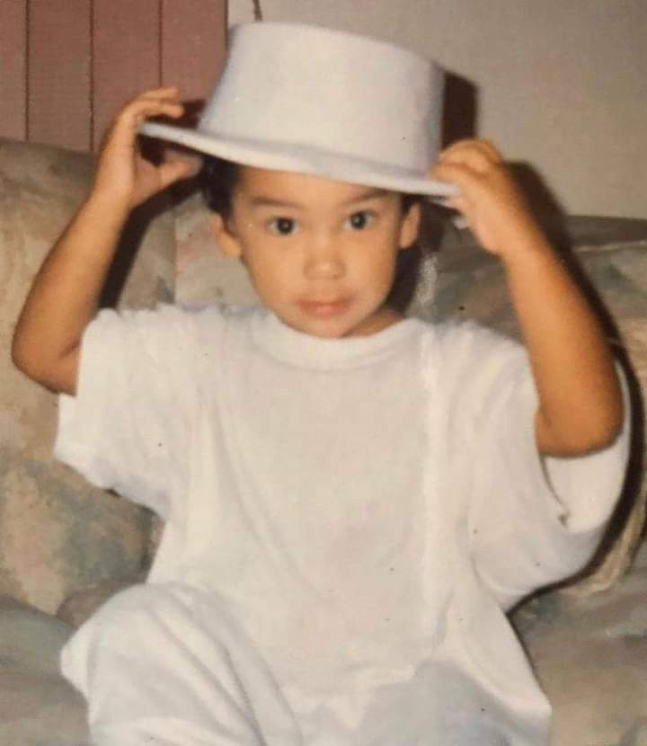
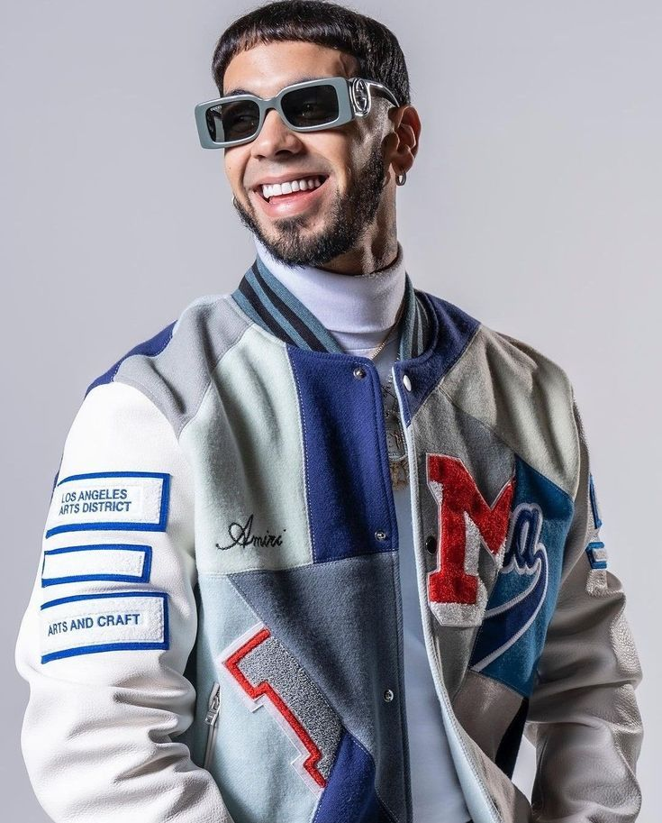

Emmanuel Gazmey Santiago, nació el 26 de noviembre de 1992 en Carolina, PuertoRico.
comenzó a grabar música a los catorce años y comenzó a publicarla en línea cuatro años después en 2010,
antes de finalmente firmar con la división latina del grupo musical Maybach Music Group del rapero estadounidense Rick Ross.

En 2016, su carrera quedó en suspenso debido a que fue sentenciado a prisión por treinta meses por posesión ilegal de
armas de fuego. Grabó la totalidad de su álbum debut mientras estaba encarcelado, tiempo durante el cual su
música ganó popularidad. El 17 de julio de 2018, fecha en que fue liberado de prisión, lanzó su álbum debut titulado Real hasta la
muerte. En los próximos seis meses, apareció en el listado Hot Latin Songs de Billboard, consolidando su posición como uno de los
mejores artistas latinos.
Actualmente el cantane esta de gira por España, llamada 'Real hasta la muerte 2 tour'. Tiene pendiente sacar su nuevo
album llamado asi como la gira 'Real hasta la muerte 2', del que ya sabemos algunas canciones como 'Little Demon' u otras que perteneceran
a este album.
Y estos ultimos meses esta colaborando en muchas canciones con el cantante colombiano Blessd, con canciones como 'Yogurcito-remix',
'Portate bonito', 'Te canto bajito' o 'Buenos Dias'.
